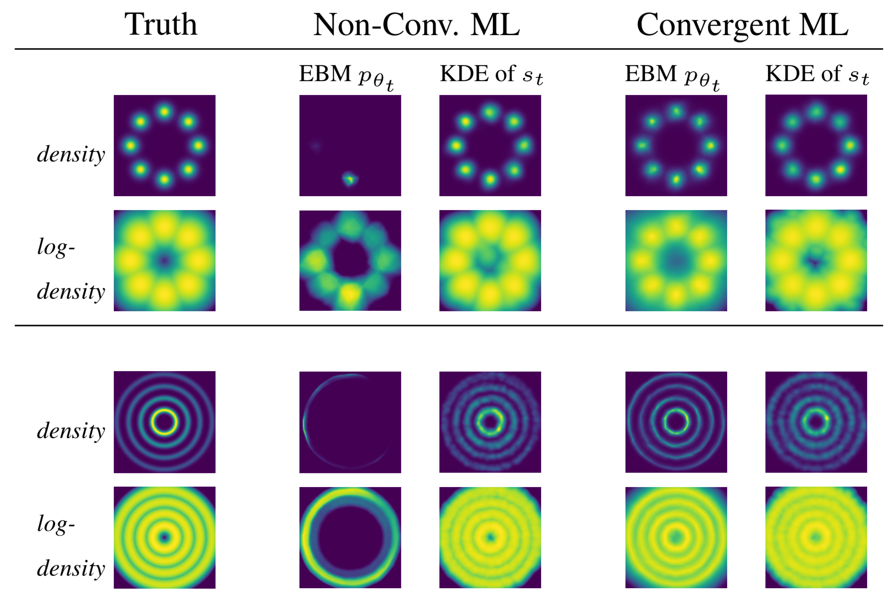
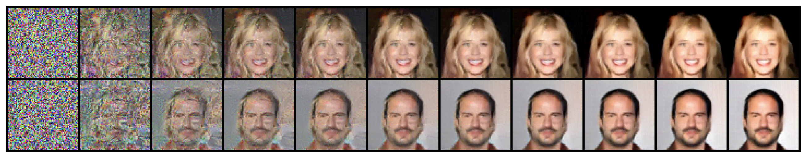

Research
My current research has two major branches:
1. Learning ConvNet Energy Functions of High-Dimensional Image Data


Energy-based learning with ConvNet functions exhibits surprising behaviors not encountered for earlier energy functions.
Two distinct of outcomes are possible: convergent learning and non-convergent learning.
Convergent learning is consistent with conventional theoretical expectations but is difficult to achieve in practice.
Non-convergent learning is an unexpected phenomenon that occurs for ConvNet energy functions which is explored here.

2. Mapping Macroscopic Structures of Non-Convex Energy Functions
The local modes of an energy function are stable states that appear with high probability.
Related groups of local modes form macroscopic non-convex structures that are analagous to folding funnels of protein potentials.
I use a novel MCMC algorithm to detect metastable structures of learned energy functions that correspond to intuitive image concepts, as explored here.